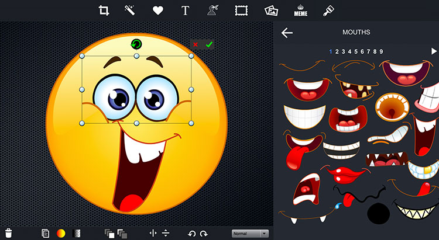
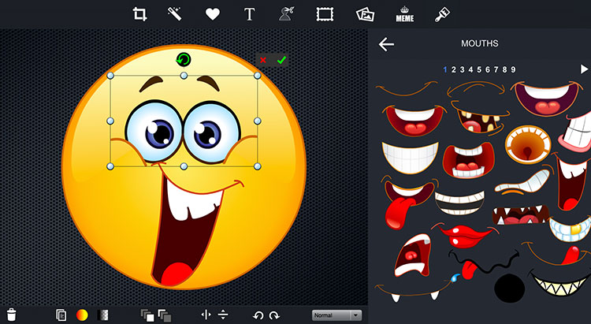

Chapter 3: Image
Source: "Multimedia: Making It Work."
Objectives
○ Discuss the various factors that apply to the use of images in multimedia.
○ Describe the capabilities and limitations of bitmap images.
○ Describe the capabilities and limitations of vector images.
○ Define various aspects of 3D modeling.
○ Describe the use of colors and palettes in multimedia.
○ Cite the various file types used in multimedia.
Overview
○ Creation of multimedia images.
○ Creation of still images.
○ Colors and palettes in multimedia.
○ Image file types used in multimedia.
|
Contents |
|---|
 

Multimedia Images
Images obviously play a very important role in multimedia products.
Images may be photograph-like bitmaps, vector-based drawings, or 3D renderings.
The type of still images created depends on the display resolution, and hardware and software capabilities.
Access to the right tools and right hardware for image development is important!
E.g., graphic designers like to have large, high-resolution monitors or multiple monitors.
Still images are generated in two ways:
- Bitmaps (or raster-based).
- Vector-drawn graphics.
Bitmap
Bitmap is derived from the words ‘bit’, which means the simplest element in which only two digits are used, and ‘map’, which is a two-dimensional matrix of these bits.
A bitmap is a data matrix describing the individual dots of an image that are the smallest elements (pixels) of resolution on a computer screen or printer.
Bitmaps are an image format suited for creation of:
- Photo-realistic images.
- Complex drawings.
- Images that require fine detail.
Bitmapped images are known as paint graphics.
Bitmapped images can have varying bit and color depths.
More bits provide more color depth, hence more photo-realism;
but require more memory and processing power.
Available binary Combinations for Describing a Color
- Monochrome just requires one bit per pixel, representing black or white
- 8 bits per pixel allows 256 distinct colors
- 16 bits per pixel represents 32K distinct colors (Most graphic chipsets now supports the full 65536 colors and the color green uses the extra one bit)
- 24 bits per pixel allows millions of colors
- 32 bits per pixel – trillion of colors
Bitmaps are best for photo-realistic images or complex drawings requiring fine detail Bitmaps picture and their suitability of use:
- Use the native Microsoft bmp format as a raw image that will later be processed. It faster to process.
- Use JPEG, for photo sharing on the web because of its size and quality.
- GIF is normally used for diagrams, buttons, etc., that have a small number of colours. It is also suitable for simple animation because it supports interlaced images.
- PNG is almost equal to gif except that it didn’t support the animation format.
Bitmaps can be inserted by:
- Using clip art galleries
- A clip art gallery is an assortment of graphics, photographs, sound, and video.
- Clip arts are a popular alternative for users who do not want to create their own images.
- Clip arts are available on CD-ROMs and on the Internet.
- Legal rights:
- Public Domain Image
- Royalty Free Image
- Right Managed Image
- Using bitmap software
- The industry standard for bitmap painting and editing programs are:
- Adobe's Photoshop and Illustrator.
- Macromedia's Fireworks.
- Corel's Painter.
- CorelDraw.
- Quark Express.
- Capturing and editing images
- Capturing and storing images directly from the screen is another way to assemble images for multimedia.
- The PRINT SCREEN button in Windows and COMMAND-CONTROL-SHIFT-4 keystroke on the Macintosh copies the screen image to the clipboard.
- Clipboard : a temporary memory to store the COPY, CUT and PASTE data.
- Image editing programs enable the user to:
- Enhance and make composite images.
- Alter and distort images.
- Add and delete elements.
- Morph (manipulate still images to create animated transformations).
- High Resolution Image: based on dot per inch (dpi) & effect file size.
- High Resolution Photo
- A high resolution picture is determined by its number of pixels; more pixels improves the sharpness of the picture.
- This is print quality.
- Low resolution photo
- Any pictures found on the web normally are low resolution and not suitable for print quality.
- A picture that is low-resolution cannot be made into a high resolution photo
- Scanning images
- Users can scan images from conventional sources and make necessary alterations and manipulations.
Example of Morphing:
Vector Drawn Images
Applications of Vector-Drawn Images
Vector-drawn images - created from geometric objects such as lines, rectangles, ovals, polygons using mathematical formulas. Vector-drawn images are used in the following areas:
- Computer-aided design (CAD) programs.
- Graphic artists designing for the print media.
- 3-D animation programs.
- Applications requiring drawing of graphic shapes.
How Vector-Drawn Images Work
A vector is a line that is described by the location of its two endpoints.
Vector drawing makes use of Cartesian co-ordinates.
Cartesian coordinates are numbers that describe a point in two or three-dimensional space as the intersection of X, Y, and Z axis.
Example:
RECT 0,0,200,300,RED,BLUE says
“Draw a rectangle starting at 0,0 (upper left corner of screen) going
200 pixels horizontally right and 300 pixels downward, with a RED
boundary and filled with BLUE.”
Vector-Drawn Images v/s Bitmaps
Vector images use less memory space and have a smaller file size (.svg) as compared to bitmaps.
For the Web, pages that use vector graphics in plug-ins download faster, and when used for animation, draw faster than bitmaps.
Vector images cannot be used for photorealistic images.
Vector images require a plug-in for Web-based display.
Bitmaps are not easily scalable and resizable.
Bitmaps can be converted to vector images using autotracing.
3-D
3-D Drawing and Rendering
3D graphics tools, such as Macromedia Extreme3D, or Form-Z, typically extend vector-drawn graphics in 3 dimensions (x, y and z)
A 3D scene consist of object that in turn contain many small elements, such as blocks, cylinders, spheres or cones (described in terms of vector graphics)
The more elements, the finer the object’s resolution and smoothness.
Objects as a whole have properties such as shape, color, texture, shading & location.
A 3D application lets you model an object’s shape, then render it completely.
Features of a 3-D Application
- Modeling
- Modeling involves drawing a shape, such as a 2D letter, then extruding it or lathing it into a third dimension.
- extruding: extending its shape along a defined path
- lathing: rotating a profile of the shape around a defined axis
- Modeling also deals with lighting, setting a camera view to project shadows.
- Rendering
- Rendering produces a final output of a scene and is more compute-intensive.
3-D Animation Tools
3-D animation, drawing, and rendering tools include:
- Ray Dream Designer.
- Caligari True Space 2.
- Specular Infini-D.
- Form*Z.
- NewTek's Lightwave.
Colors
Natural Light and Color
Vector-drawn images - created from geometric objects such as lines, rectangles, ovals, polygons using mathematical formulas. Vector-drawn images are used in the following areas:
- Light comes from an atom where an electron passes from a higher to a lower energy level.
- Each atom produces uniquely specific colors.
- Color is the frequency of a light wave within the narrow band of the electromagnetic spectrum, to which the human eye responds.
- Eye can differentiate 80,000 different colors.
Color and Culture
Color and Emotion
Computererized Color
The tools we use to describe color are different when the color is printed than from when it is projected
2 basic method of making color:
- Additive Color
- In the additive color method, a color is created by combining colored light sources in three primary colors - red, green, and blue (RGB).
- OLD TV and computer monitors use this method.
- Subtractive Color
- In the subtractive color method, color is created by combining colored media such as paints or ink.
- The colored media absorb (or subtract) some parts of the color spectrum of light and reflect the others back to the eye.
- Subtractive color is the process used to create color in printing.
- The printed page consists of tiny halftone dots of three primary colors- cyan (complement of Red), magenta (complement of Green), and yellow (Complement of Blue) (CMY).
Monitor-Specific Colors
Colors should be used according to the target audience's monitor specifications. The preferred monitor resolution is higher 1024x768 pixels and higher. The preferred color depth is 24 bits or more which can display 16,777,216 different colors.
Computer Color Models
Different ways of representing information about color.
Models used to specify color in computer terms are:
- RGB model- A 24-bit methodology where color is specified in terms of red, green, and blue values ranging from 0 to 255.
- HSB and HSL models – Color is specified as an angle from 0 to 360 degrees on a color wheel.
- Other models include CMYK, CIE, YIQ, YUV, and YCC.
RGB Model
Add red, green and blue to create colors, so it is an additive model. Assigns an intensity value to each pixel ranging from 0 (black) to 255 (white). A bright red color might have R 246, G 20, B 50
HSB and HSL Color Models
Based on human perception of color, three fundamental properties of color:
- Hue – angle of 0 -360 degrees
- Hue - color reflected from or transmitted through an object, measured on color wheel
- Saturation – intensity of color (%)
- Saturation (or chroma) - strength or purity of color (% of grey in proportion to hue)
- Brightness / Lightness - relative lightness or darkness of color (%)
- Brightness - relative lightness or darkness of color, also measured as %
CMYK Model
Based on light-absorbing quality of ink printed on paper
As light is absorbed, part of the spectrum is absorbed and part is reflected back to eyes
Associated with printing; called a modsubtractive model
Four channels: Cyan (C ), magenta (M), yellow (Y) and black (K),
In theory, pure colors should produce black, but printing inks contain impurities, so this combination produces muddy brown
K is needed to produce pure black, hence CMYK is four-color process printing
Color Palettes
Palettes are mathematical tables that define the color of pixels displayed on the screen. Palettes are called ‘color lookup tables’ or CLUTs on Macintosh. The most common palettes are 1, 4, 8, 16, and 24-bit deep.
Dithering
Dithering is a process whereby the color value of each pixel is changed to the closest matching color value in the target palette. This is done using a mathematical algorithm.
Image File Type used in Multimedia
- Macintosh formats.
- On the Macintosh, the most commonly used format is PICT.
- PICT is a complicated and versatile format developed by Apple.
- Almost every image application on the Macintosh can import or export PICT files.
- Windows formats.
- The most commonly used image file format on Windows is DIB or known as BMP.
- DIB stands for Device-independent bitmaps.
- Bitmap formats used most often by Windows developers are:
- BMP - A Windows bitmap file. Native bitmap file format of the Microsoft Windows environment
- TIFF - Extensively used in DTP packages. Used to exchange documents between different applications and platforms
- PCX - Used by MS-DOS paint software. One of the oldest bitmapped formats popularized by MS-DOS paint programs that first appeared in the early 1980's
- Cross-platform formats.
- The image file formats that are compatible across platforms are:
- DXF, IGS or IGES - Used by CAD applications.
- CDR – CorelDraw, PSD – Photoshop n AI - Illustrator
- JPEG, PNG and GIF - Most commonly used formats on the Web.
Most Popular Image File Formats
- JPEG (Joint-Photographic Experts Group)
- For continuous tone images, such as full-color photographs Supports more than 16 millions of color (24-bit) Uses lossy compression (averaging may lose information)
- GIF (Graphical Interchange Format)
- For large areas of the same color and a moderate level of detail.
- Supports up to 256 colors
- Allows transparency and interlacing
- Uses lossless compression
- PNG (Portable Network Graphic)
- lossless, portable, well-compressed storage of raster images
- patent-free replacement for GIF
- also replace many common uses of TIFF
- Support indexed-color, grayscale, and true color images + an optional alpha channel for transparency
- Other formats: BMP, PSD, TIFF/TIF, TGA, EPS, PCX, ICO
Information Delivery
Images or Graphics are used to convey information in multimedia products.
For example, a picture of an automobile engine is much more effective than text that merely describes it.
Images or Graphics for information delivery include:
- Drawn images
- Charts and graphs
- Maps
- Scenery
- People
In each case, the image must be relevant to the overall product. Image size, color in respect to the application and other images, and positioning must all be considered when using images.